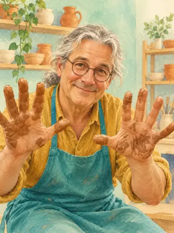
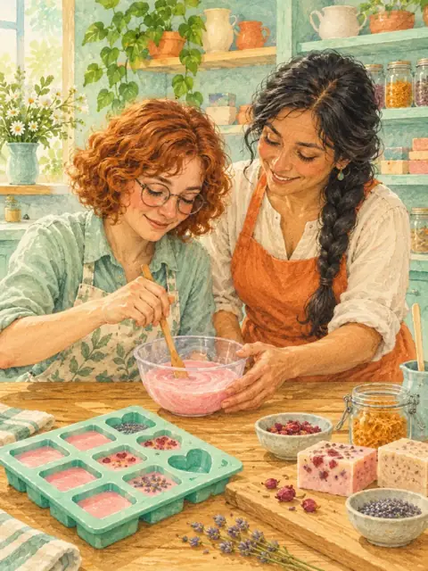
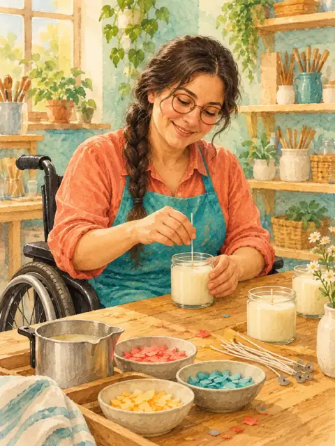
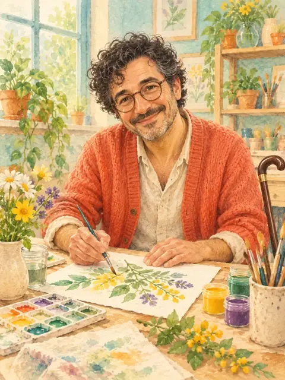
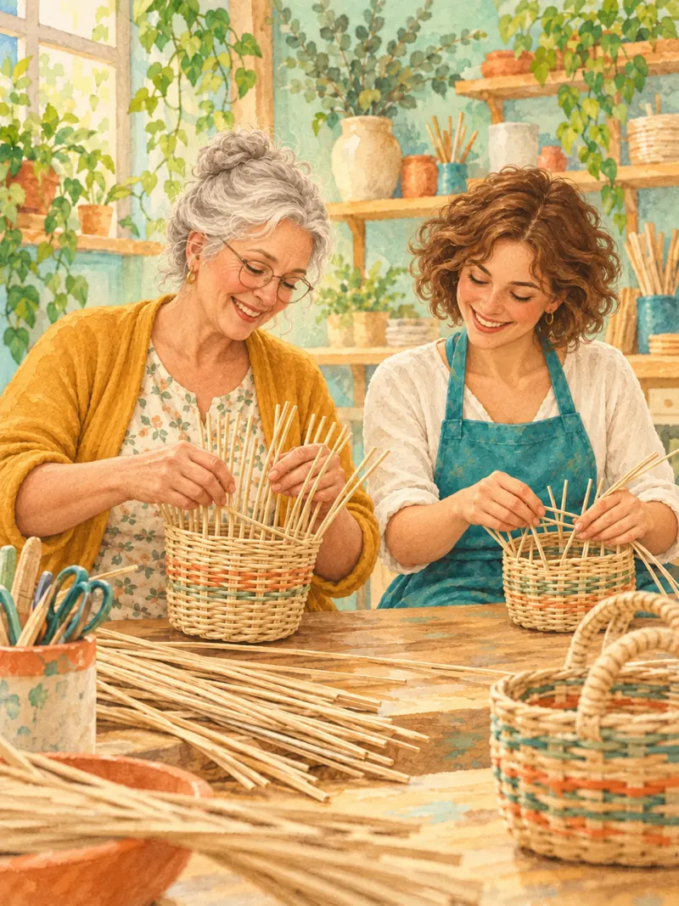
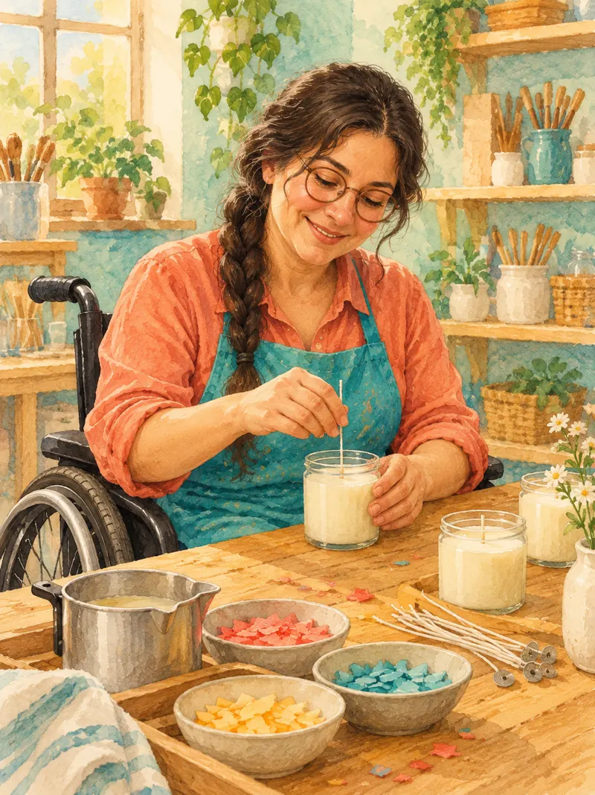
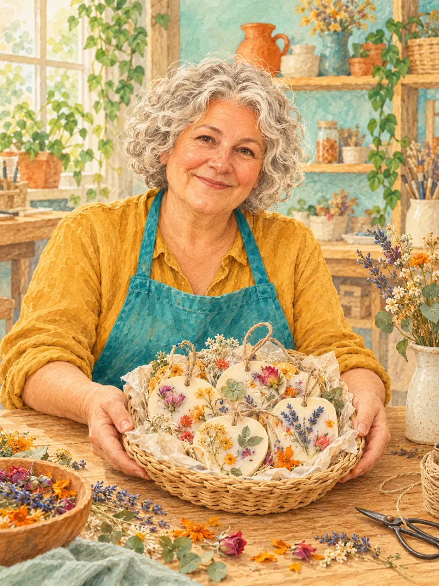

Участие в мастерской
для остальных участников
700 ₽
Учебный проект. Персонажи вымышлены. Записи на занятия нет.
Для людей с инвалидностью и их близких, а также для всех, кому интересно творчество.
Все персонажи и иллюстрации — вымышленные




Для кого
В первую очередь ждём людей с инвалидностью и их близких. Наши мастерские открыты для всех.
— узнать о творческих занятиях и условиях участия
— посмотреть, какие мастерские есть и как записаться
— познакомиться с творческими занятиями
Что останется после занятия
В ремесленных мастерских участники делают изделия и обычно забирают их домой. Конкретный результат зависит от занятия.
Как попасть на занятие
Так может выглядеть порядок записи. В учебном макете контакты используются только для проверки связи.
найдите интересное направление
позвоните или напишите ВКонтакте
уточните дату, стоимость и наличие мест
договоритесь о времени и месте встречи
Направления мастерских
В мастерских есть керамика, бумажная лоза, мыло, свечи, ароматические саше и арт-терапия.
создайте керамическую вещь своими руками

сплетите изделие своими руками
сделайте мыло на мастерской

сделайте свечу на мастерской

создайте саше своими руками
творческие занятия в мастерской
Пример раздела о поддержке
Учебный пример того, как можно представить помощь, общение и доступный досуг. Эти услуги через макет не предоставляются.
информация о возможных форматах консультаций
детям, взрослым и семьям
экскурсии по продуманным маршрутам с минимумом ступенек; можно приходить всей семьёй
встречи для знакомства и общения
пример командного досуга
короткие статьи о планировке комнат и рабочих мест для людей на колясках, с ограниченной мобильностью и слабым зрением
Художественная история
Вымышленные героини Нина и Лера создают подарки своими руками. Иллюстрации и рассказ подготовлены для учебного проекта.


Стоимость мастерских
Базовая цена за участие; некоторые занятия арт-терапии стоят дороже из-за материалов.
для остальных участников
700 ₽
для людей с инвалидностью
350 ₽скидка 50%
цена выше из-за дорогих материалов; точная сумма указана в объявлении занятия
Перед записью проверьте объявление выбранной мастерской: там указана цена и включение материалов.
Перед записью
Пример условий участия. Учебный макет не принимает запись на занятия.
согласуйте занятие и получите подтверждение в разговоре или переписке
на некоторых занятиях цена выше из-за дорогих материалов
включение в стоимость указано в объявлении конкретного занятия
уточните время, адрес и условия доступа на площадку
Учебный макет
Это неофициальная учебная страница. Контакты принадлежат автору макета. Запись на реальные занятия здесь не проводится.